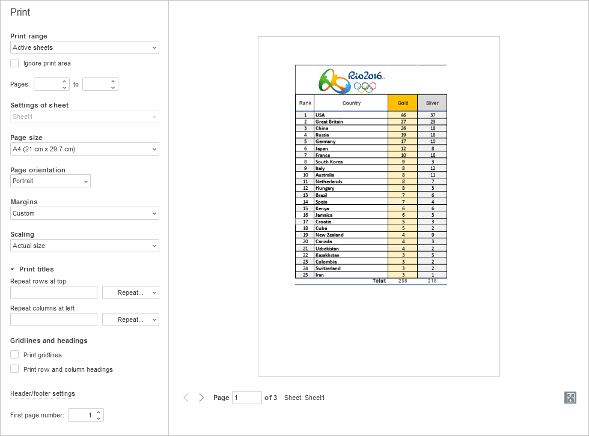
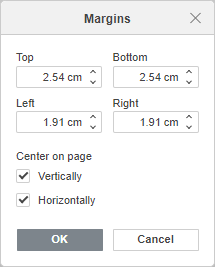
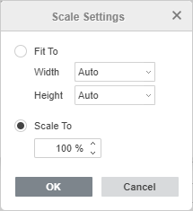

Čuvanje/štampanje/preuzimanje tabele
Čuvanje
Podrazumevano, online Spreadsheet Editor automatski čuva vašu datoteku na svake 2 sekunde dok radite na njoj, sprečavajući gubitak podataka u slučaju neočekivanog zatvaranja programa. Ako zajednički uređujete datoteku u režimu Fast, tajmer zahteva ažuriranja 25 puta u sekundi i čuva izmene ako su napravljene. Kada se datoteka zajednički uređuje u režimu Strict, izmene se automatski čuvaju na svakih 10 minuta. Ako je potrebno, lako možete izabrati željeni režim zajedničkog uređivanja ili onemogućiti opciju Autosave na stranici Advanced Settings.
Da biste ručno sačuvali trenutnu tabelu u postojećem formatu i lokaciji,
- kliknite na ikonu Save na levoj strani zaglavlja editora, ili
- koristite kombinaciju tastera Ctrl+S, ili
- kliknite na karticu File na gornjoj alatnoj traci i izaberite opciju Save.
U desktop verziji, kako biste sprečili gubitak podataka u slučaju neočekivanog zatvaranja programa, možete uključiti opciju Autorecover na stranici Advanced Settings.
U desktop verziji, možete sačuvati tabelu pod drugim imenom, na novoj lokaciji ili u drugom formatu,
- kliknite na karticu File na gornjoj alatnoj traci,
- izaberite opciju Save as,
- izaberite jedan od dostupnih formata u skladu sa vašim potrebama: XLSX, XLTX, ODS, OTS, CSV, PDF, PDF/A, XLTM, JPG, PNG.
Preuzimanje
U online verziji, možete preuzeti rezultujuću tabelu na hard disk vašeg računara,
- kliknite na karticu File na gornjoj alatnoj traci,
- izaberite opciju Download as,
-
izaberite jedan od dostupnih formata u skladu sa vašim potrebama: XLSX, ODS, CSV, PDF, XLTX, OTS, PDF/A, JPG, PNG.
Napomena: ako izaberete CSV format, sve funkcije (formatiranje fonta, formule itd.) osim običnog teksta neće biti sačuvane u CSV datoteci. Ako nastavite sa čuvanjem, otvoriće se prozor Choose CSV Options. Podrazumevano se koristi Unicode (UTF-8) kao tip Encoding. Podrazumevani Delimiter je zarez (,), ali su dostupne i sledeće opcije: tačka-zarez (;), dve tačke (:), Tab, Razmak i Other (ova opcija omogućava postavljanje prilagođenog znaka za razdvajanje).
Čuvanje kopije
U online verziji, možete sačuvati kopiju datoteke na vašem portalu,
- kliknite na karticu File na gornjoj alatnoj traci,
- izaberite opciju Save Copy as,
- izaberite jedan od dostupnih formata u skladu sa vašim potrebama: XLSX, ODS, CSV, PDF, XLTX, OTS, PDF/A, JPG, PNG,
- izaberite lokaciju datoteke na portalu i kliknite na Save.
Štampanje
Da biste odštampali trenutnu tabelu,
- kliknite na ikonu Print na levoj strani zaglavlja editora, ili
- koristite kombinaciju tastera Ctrl+P, ili
- kliknite na karticu File na gornjoj alatnoj traci i izaberite opciju Print.
Otvoriće se Preview prikaz tabele i dostupne opcije za štampanje.
Neka od ovih podešavanja (stranične Margins, Orientation, Size, Print Area kao i Scale to Fit) dostupna su i na kartici Layout na gornjoj alatnoj traci.

Ovde možete podesiti sledeće parametre:
-
Print range – odredite šta će se štampati: Active sheets, All sheets ili Selection.
Ako ste prethodno postavili fiksnu oblast za štampanje, ali želite da odštampate ceo list, označite opciju Ignore print area.
- Stranice – navedite opseg stranica za štampanje. Brojeve možete uneti ručno ili koristiti odgovarajuće strelice.
- Podešavanja lista – navedite pojedinačna podešavanja štampe za svaki zasebni list, ako ste izabrali opciju Svi listovi u padajućoj listi Opseg štampanja.
- Veličina stranice – izaberite jednu od dostupnih veličina iz padajuće liste:
- US Letter (21,59cm x 27,94cm)
- US Legal (21,59cm x 35,56cm)
- A4 (21cm x 29,7cm)
- A5 (14,81cm x 20,99cm)
- B5 (17,6cm x 25,01cm)
- Envelope #10 (10,48cm x 24,13cm)
- Envelope DL (11,01cm x 22,01cm)
- Tabloid (27,94cm x 43,17cm)
- A3 (29,7cm x 42,01cm)
- Tabloid Oversize (29,69cm x 45,72cm)
- ROC 16K (19,68cm x 27,3cm)
- Envelope Choukei 3 (12cm x 23,5cm)
- Super B/A3 (30,5cm x 48,7cm)
- Orijentacija stranice – izaberite opciju Portrait ako želite vertikalno štampanje, ili koristite opciju Landscape za horizontalno štampanje.
- Margine – izaberite jedan od dostupnih unapred definisanih profila: Normal, Narrow ili Wide, ili izaberite opciju Custom i navedite rastojanje između podataka na listu i ivica odštampane stranice menjajući podrazumevane vrednosti u poljima Top, Bottom, Left i Right.
Da biste centrirali podatke na odštampanoj stranici, izaberite opciju Custom iz menija Margins, označite polje Vertically/Horizontally u odeljku Center on page i kliknite na OK.

-
Skaliranje – ako ne želite da se neke kolone ili redovi štampaju na drugoj stranici, možete smanjiti sadržaj lista kako bi stao na jednu stranicu izborom odgovarajuće opcije: Actual Size, Fit Sheet on One Page, Fit All Columns on One Page ili Fit All Rows on One Page. Ostavite opciju Actual Size da biste štampali list bez prilagođavanja.
Ako izaberete stavku Custom Options iz menija, otvoriće se prozor Scale Settings:

- Fit To: omogućava da izaberete potreban broj stranica na koje želite da prilagodite odštampani radni list. Izaberite potreban broj stranica iz lista Width i Height.
- Scale To: omogućava da uvećate ili smanjite razmeru radnog lista kako bi odgovarao odštampanim stranicama ručnim navođenjem procenta u odnosu na normalnu veličinu.
- Naslovi za štampu – ako želite da štampate naslove redova ili kolona na svakoj stranici, koristite Repeat rows at top i/ili Repeat columns at left da navedete red i kolonu sa naslovom za ponavljanje, ili izaberite jednu od dostupnih opcija iz padajuće liste: Frozen rows/columns, First row/column ili Don't repeat.
- Mrežne linije i zaglavlja – navedite elemente radnog lista za štampanje označavanjem odgovarajućih polja: Print gridlines i Print row and column headings.
- Podešavanja zaglavlja/podnožja – omogućavaju dodavanje dodatnih informacija na odštampani radni list, kao što su datum i vreme, broj stranice, naziv lista itd.
- Broj prve stranice – navedite broj prve stranice za štampanje.
- Uključite ili isključite prekidač Zoom to page u donjem desnom uglu ekrana da biste prikazali stvarnu veličinu listova kada je isključen ili smanjili prikaz kada je uključen.
Nakon što podesite opcije štampanja, kliknite na dugme Print da biste sačuvali izmene i odštampali tabelu ili na dugme Save da biste sačuvali izmene podešavanja štampanja.
Sve izmene koje ste napravili biće izgubljene ako ne odštampate tabelu ili ne sačuvate izmene.
Preview prikaz tabele omogućava vam da se krećete kroz tabelu pomoću strelica na dnu kako biste videli kako će vaši podaci biti prikazani na listu prilikom štampanja i da ispravite eventualne greške pomoću podešavanja štampe iznad.
U online verziji, PDF datoteka će biti generisana na osnovu dokumenta. Možete je otvoriti i odštampati ili sačuvati na hard disk računara ili prenosivi medij za kasnije štampanje. Neki pregledači (npr. Chrome i Opera) podržavaju direktno štampanje.
Opcije štampanja u desktop verziji su sledeće: izaberite štampač iz liste Printer, izaberite Print range, Ignore print area, unesite Pages i broj Copies za štampanje, izaberite Print sides, Page size, Page orientation, Margins, Scaling i First page number. Opcije Print titles, Gridlines and headings i Header/footer settings omogućavaju štampanje opsežne višestranične tabele i definisanje elemenata za štampu. Da biste podesili dodatna svojstva štampača, pristupite sistemskom dijalogu za štampanje pomoću opcije Print using the system dialog. Da biste završili proces podešavanja, koristite dugme Print, Print to PDF ili Save. Dugme Quick print na gornjoj alatnoj traci omogućava štampanje datoteke koristeći poslednji izbor štampača ili podrazumevani štampač.
Podešavanje oblasti za štampu
Ako želite da štampate samo izabrani opseg ćelija umesto celog radnog lista, možete koristiti opciju Selection iz padajuće liste Print range. Kada se radna sveska sačuva, ovo podešavanje se ne čuva i namenjeno je jednokratnoj upotrebi.
Ako je potrebno često štampati određeni opseg ćelija, možete postaviti stalnu oblast za štampu na radnom listu. Kada se radna sveska sačuva, oblast za štampu se takođe čuva i može se koristiti prilikom sledećeg otvaranja tabele. Takođe je moguće postaviti više stalnih oblasti za štampu na jednom listu, u tom slučaju će se svaka oblast štampati na posebnoj stranici.
Da biste postavili oblast za štampu:
- izaberite potreban opseg ćelija na radnom listu. Da biste izabrali više opsega ćelija, držite pritisnut taster Ctrl,
- prebacite se na karticu Layout na gornjoj alatnoj traci,
- kliknite na strelicu pored dugmeta Print Area i izaberite opciju Set Print Area.
Kreirana oblast za štampu se čuva kada se radna sveska sačuva. Kada sledeći put otvorite datoteku, navedena oblast za štampu biće odštampana.
Kada kreirate oblast za štampu, automatski se kreira i Print_Area imenovani opseg, koji se prikazuje u Name Manager-u. Da biste istakli ivice svih oblasti za štampu na trenutnom radnom listu, možete kliknuti na strelicu u polju za naziv koje se nalazi levo od trake sa formulama i izabrati naziv Print_Area iz liste naziva.
Da biste dodali ćelije u oblast za štampu:
- otvorite potreban radni list na kojem je oblast za štampu dodata,
- izaberite potreban opseg ćelija na radnom listu,
- prebacite se na karticu Layout na gornjoj alatnoj traci,
- kliknite na strelicu pored dugmeta Print Area i izaberite opciju Add to Print Area.
Nova oblast za štampu biće dodata. Svaka oblast za štampu biće odštampana na posebnoj stranici.
Da biste uklonili oblast za štampu:
- otvorite potreban radni list na kojem je oblast za štampu dodata,
- prebacite se na karticu Layout na gornjoj alatnoj traci,
- kliknite na strelicu pored dugmeta Print Area i izaberite opciju Clear Print Area.
Sve postojeće oblasti za štampu na ovom listu biće uklonjene. Nakon toga će se štampati ceo list.